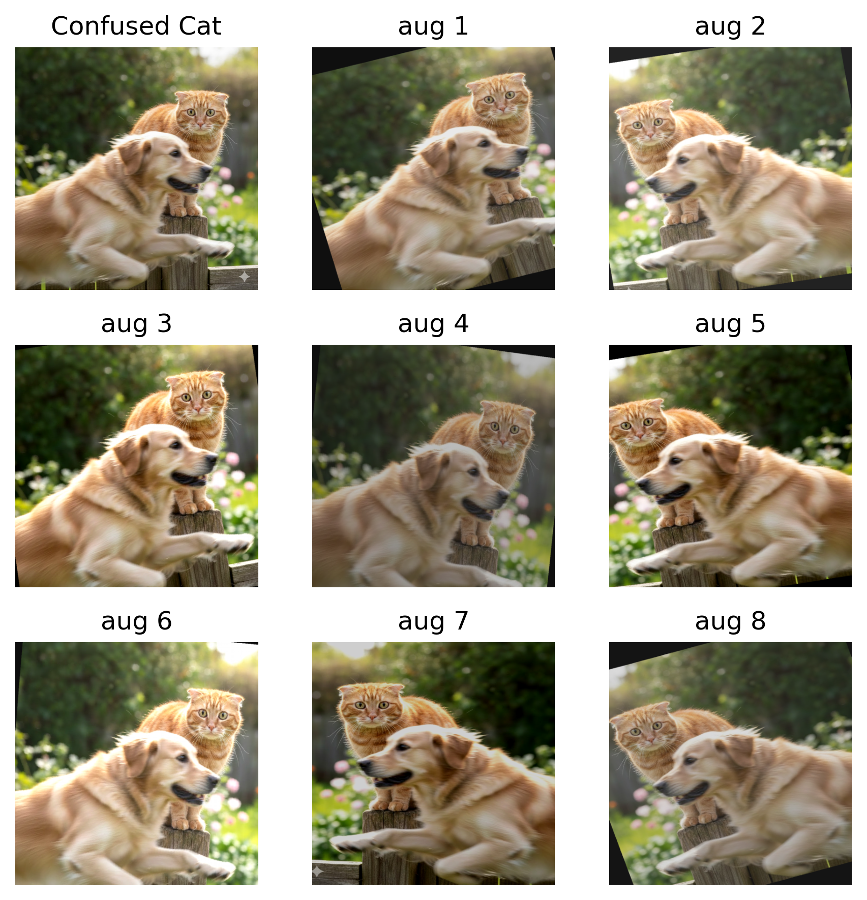
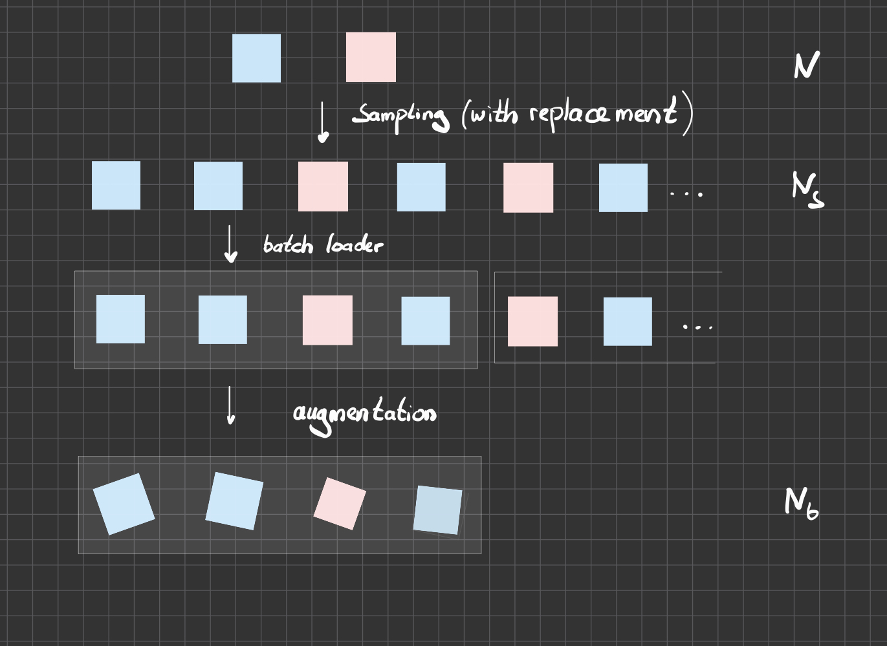

Data Augmentation
transform
augmentation
datasets
data loader
How to add synthetic data
Load Image Data
Transformations
As a most basic step we should convert an image to a tensor
Code
NOTICE: different shapes for torch and numpy!
img.shape (torch tensor): torch.Size([3, 1024, 1024])
img.shape (numpy arrary): (1024, 1024, 3)We can also compose more complex transformations:
- image size adjustments (if necessary)
- number of channels match (RGB or gray scale?)
- same normalization as done for model training
Code
# code not executed - just for illustration
# image sizes and channels
IMG_H, IMG_W, IMG_C = 32, 32, 3
# normalizations are part of model definition!
MEAN = [0.485, 0.456, 0.406]
STD = [0.229, 0.224, 0.225]
transform = transforms.Compose([
# adjust H,W,C if necessary
transforms.Resize((IMG_H, IMG_W)),
transforms.Grayscale(num_output_channels=IMG_C),
transforms.ToTensor(), # image -> tensor
transforms.Normalize(mean=MEAN, std=STD), # image norm
])Data Augmentation
Transformations that do not change the label.
Code
# define augmentation transformation
augment = transforms.Compose([
transforms.RandomRotation(degrees=20),
transforms.RandomHorizontalFlip(p=0.5),
transforms.ColorJitter(brightness=0.3, contrast=0.3),
transforms.RandomResizedCrop(size=512, scale=(0.8, 1.0)),
])
def imshow(img, title):
# (C,H,W) -> (H,W,C) for visual with plt
npimg = img.permute(1,2,0).numpy()
plt.imshow(npimg)
plt.title(title)
plt.axis("off") Reference: torchvision.transforms
Examples
Code

Data Augmentation
- include operations that will not change class label
- dataset specific: e.g. rotations, axis flipping, color adjustments, cropping …??
- encodes understanding of symmetries in the problem
Augmentation with Datasets
Working with larger datasets
- attach transformation function to the dataset
- transformation will be called upon data access (not upon load)
Define transformation
Dataset from directory
Note
- images are located in
ROOTdirectory - organized by classes in subdirectories: cat/, dog/, …
For illustration: single image in single subfolder
Code
read dataset from images
len(ds) = 1, class_names=['cat']Dataset access
Code
img: torch.Size([3, 512, 512]), label: cat… and similarly for larger pre-defined datasets (e.g. CIFAR-10 train data)
Code
from torchvision import datasets
# CIFAR10 ./data structure is different from ImageFolder
train_ds = datasets.CIFAR10(
root='./data', train=True, download=True,
transform=transform
)
print(f'CIFAR-10 train dataset from ./data')
print(f'len(ds) = {len(train_ds)}, class_names={train_ds.classes}')
# dataset access
img, label = train_ds[42]
print(f'img: {img.shape}, label: {train_ds.classes[label]}')CIFAR-10 train dataset from ./data
len(ds) = 50000, class_names=['airplane', 'automobile', 'bird', 'cat', 'deer', 'dog', 'frog', 'horse', 'ship', 'truck']
img: torch.Size([3, 512, 512]), label: birdAugmentation with Data Loader
Usually we access datasets with DataLoaders.
Note
- size of a dataset (and an epoch) becomes arbitrary
- replace each original image with many generated images
Code
from torch.utils.data import DataLoader, RandomSampler
NS=50_000 # number of samples to define epoch
BATCH_SIZE=64 # batch size for processing
print(f'orginal data size: {len(ds)}')
# sampling with replacement since we may have: len(ds) < NS
sampler = RandomSampler(ds, replacement=True, num_samples=NS)
train_loader = DataLoader(
ds,
batch_size=BATCH_SIZE,
sampler=sampler, # not shufffle=True
)
X,y = next(iter(train_loader))
print(f'batch sizes (with augmentation)')
print(f'images: {X.shape}, labels: {y.shape}')orginal data size: 1
batch sizes (with augmentation)
images: torch.Size([64, 3, 512, 512]), labels: torch.Size([64])
No Augmentation for test and validation set
Test and Validation datasets
- are fixed benchmarks and stable datasets
- should provide reproducible metrics (loss, accuracy, … )
- difference should reflect model changes, not changes in the dataset
Code
SIZE = 512
# Training: stochastic augmentations
train_transform = transforms.Compose([
transforms.RandomResizedCrop(size=SIZE, scale=(0.8, 1.0)),
transforms.RandomHorizontalFlip(p=0.5),
transforms.RandomRotation(degrees=20),
transforms.ColorJitter(brightness=0.3, contrast=0.3),
transforms.ToTensor(),
])
# Validation/test: deterministic preprocessing only
eval_trans = transforms.Compose([
transforms.Resize((SIZE, SIZE)),
transforms.ToTensor(),
])
# train_ds with train_transform (incl augmentation)
train_ds = datasets.ImageFolder( root="train", transform=train_transform)
# no augmentation for val_ds and test_ds
val_ds = datasets.ImageFolder(root="val", transform=eval_trans)
test_ds = datasets.ImageFolder(root="test", transform=eval_trans)Summary
- data augmentation encodes prior knowledge and known symmetries
- can reduce overfitting
- can improve generalization
- may compensate for limited training data
- !Assumption: transformation preserves label!